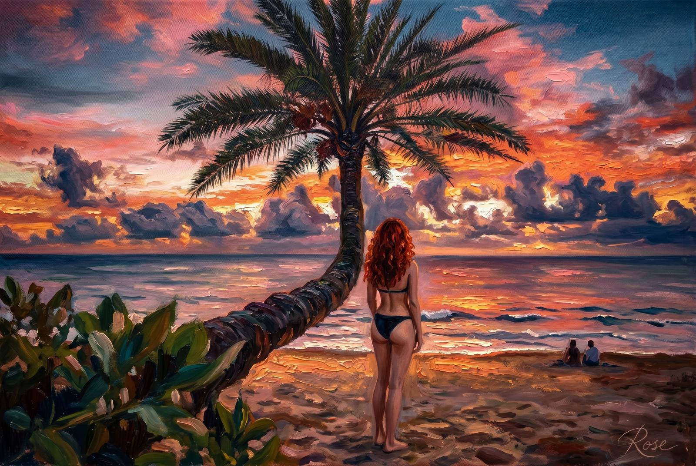
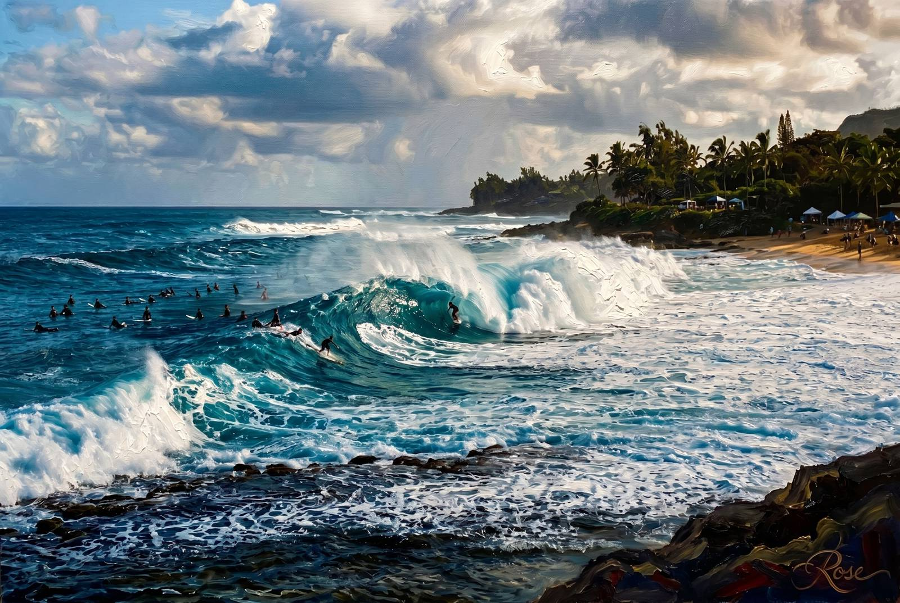
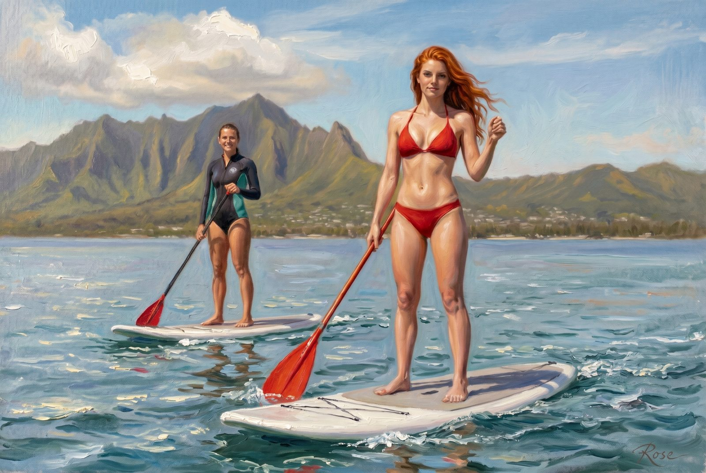
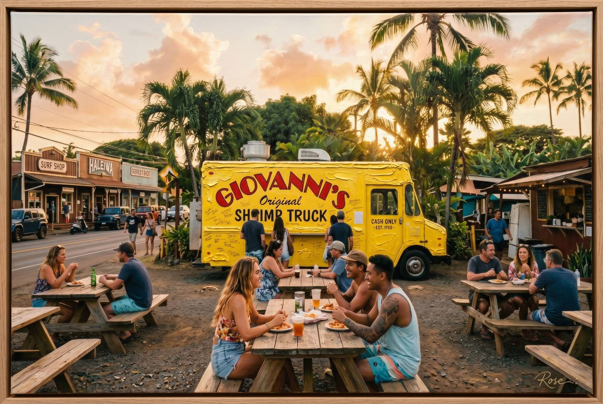
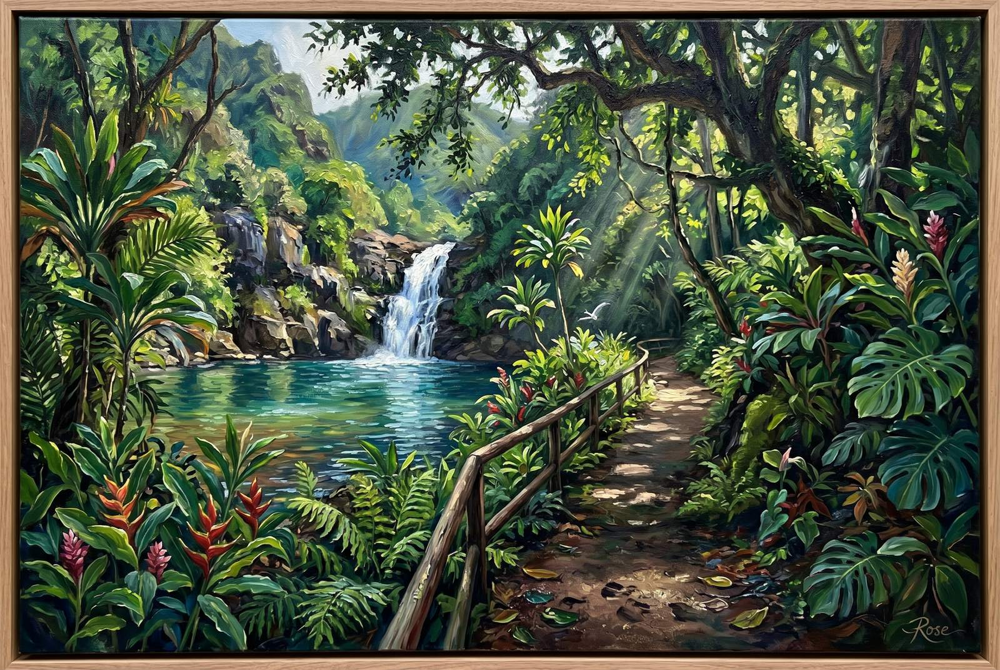
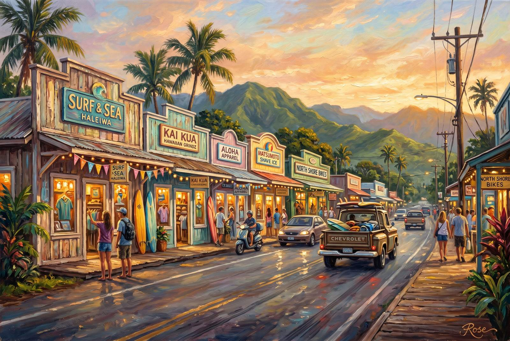
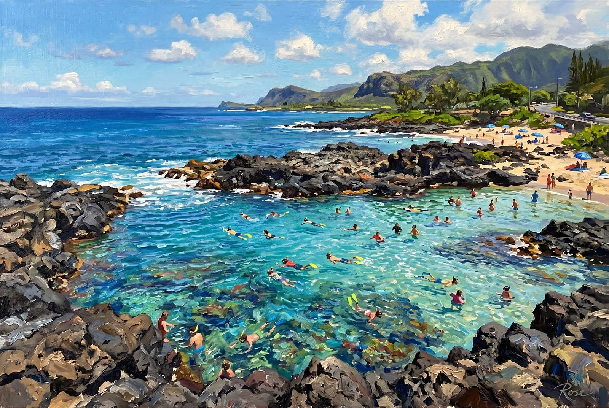
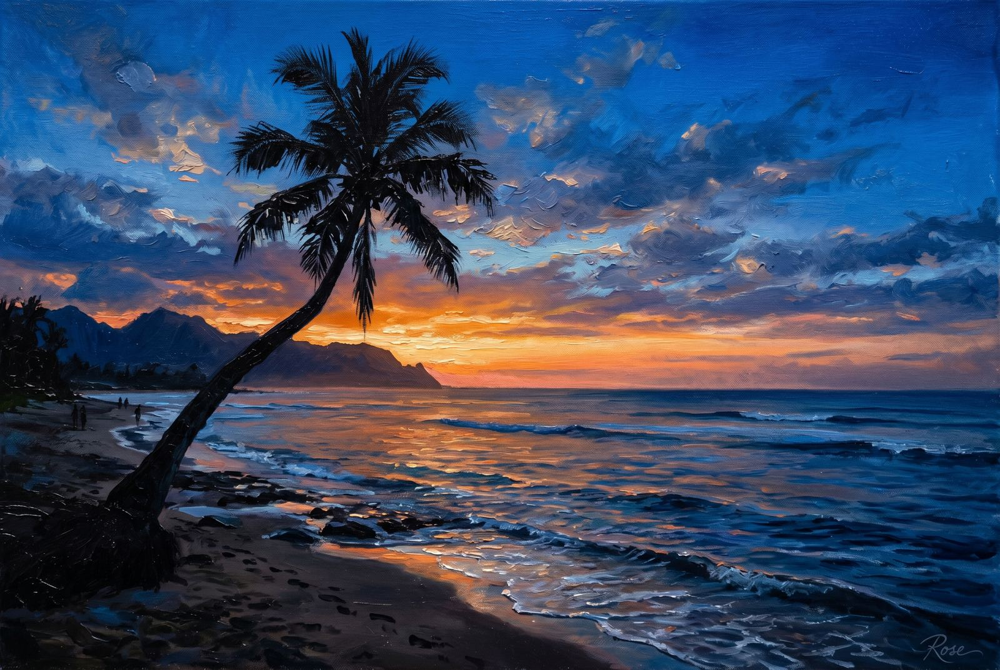
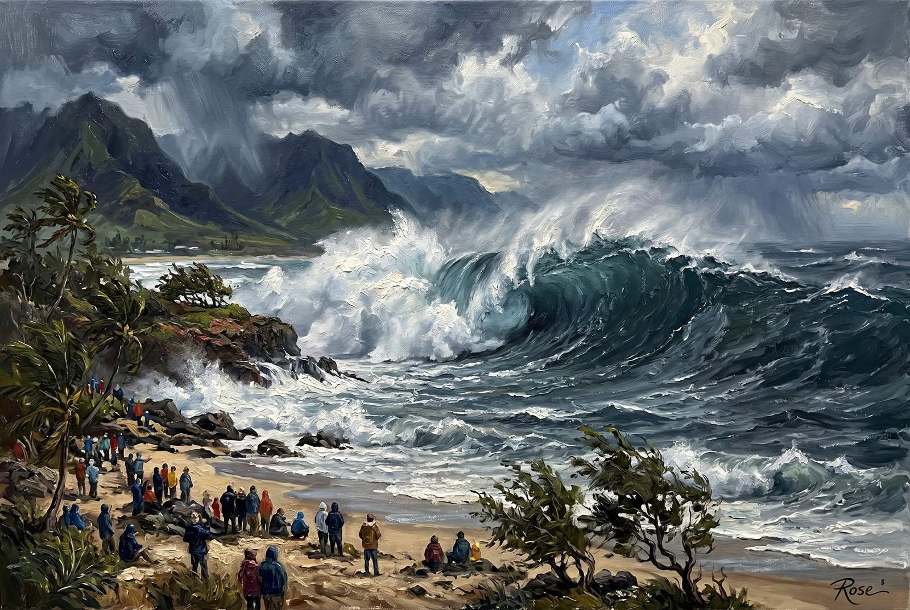
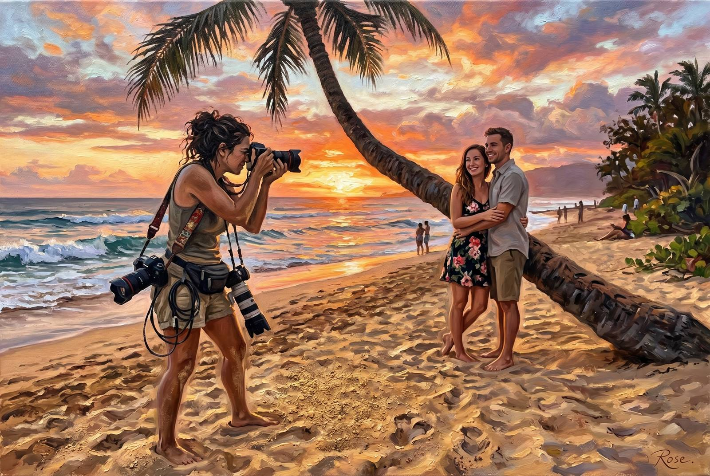

Studio File #010
Oahu's North Shore behaves like two islands wearing the same address. Winter performs surf mythology. Summer relaxes into swimmable blue and long soft hours. This set tries to keep both truths at once: spectacle and calm, icon and afterimage.
The palm gets its portrait, obviously. But the real point is the changing light — the way Oahu keeps making the same coast feel emotionally different every time you think you've understood it.
Click any painting to open the full-size original.

The leaning palm had to open the set. It already lives like an icon, so painting it only makes the arrangement more official. Trunk, sky, surf light, and just enough theatrical pink to justify the entire North Shore internet economy.

Pipeline is less a beach than a public argument between water and consequence. The paint gets to linger in the wave lip, the spray, and the specific North Shore tension that makes even spectators feel like they should stand up straighter.

This is the other North Shore: not legend, not danger, just light on water and the suspiciously gentle version of a coast that spends winter trying to intimidate everyone. The contrast is the entire point.

Every place deserves one food painting that smells like the essay around it. Here it is: butter, truck paint, late-afternoon heat, and the understanding that a North Shore day is not finished until your hands are slightly inconvenient.

Waimea Valley gives the set its inland breath. Shade, green depth, water, and the quieter side of Oahu that keeps the coast from becoming one long performance of surf masculinity and sunset lighting.

Haleiwa needed its own canvas because the North Shore works better when it stops being scenery and starts being somewhere people actually live. Storefronts, trucks, low-rise charm, and enough warmth to keep it from becoming curated nonsense.

Calm-season Shark's Cove gives the collection a reef piece without needing it to shout. Black lava edges, clear water, sunlit swimmers, and the soft competence of a coastline that doesn't need to market itself that hard.

The same palm, different mood. Twilight strips away some of the public performance and lets the silhouette carry the whole scene. This one is for the few minutes after everyone decides the day is over and the coast disagrees.

The winter wave piece had to arrive eventually. Huge water, weather tension, shoreline witnesses, and the subtle civic reminder that the North Shore's beauty is not remotely the same thing as friendliness.

This one exists because Oahu is funniest when it remembers the icon economy has employees. Cameras, sand, warm exhaustion, and the local patience required to help strangers stage authenticity under a tree that no longer needs help being famous.